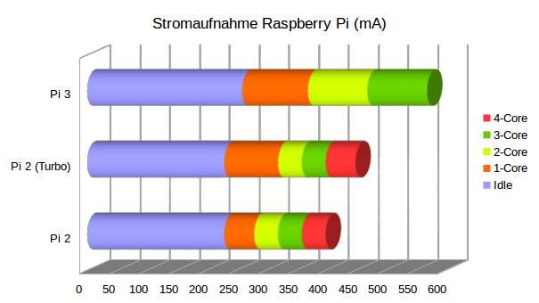

Will man eine Raspberry Pi am USB-Anschluss eines Laptops betreiben, so ist man mit ca. 500 mA beschränkt. Welche Modelle kommen damit zurecht?
Beschreibung
Bei dem Raspberry Pi Jam verwenden wir alte Dell Laptops. Um möglichst einfache Aufbauten zu haben wollen wir die Raspberry Pi mit einem USB-Kabel direkt über den vorhandenen USB-Anschluss versorgen. Anfänglich hatten wir nur Raspberry Pi Zero Modelle, hier war das kein Problem. Die Stromaufnahme liegt bei ihnen unter 500 mA. Nun haben wir aber Raspberry Pi 2 und 3 Modelle bekommen. Nun soll untersucht werden ob diese auch mit dem USB-Anschluss versorgt werden können.
Testaufbau
Die Stromaufnahme des Systems wurde über einen USB-Tester gemessen. Zuerst wurde die Stromaufnahme im Leerlauf (Idle) Zustand gemessen. Dann wurde mit dem Programm “sysbench” CPU-Last auf einem, zwei, drei und vier Kernen erzeugt und gemessen.
sudo apt-get install sysbench
sysbench --num-threads=1 --test=cpu --cpu-max-prime=20000 run
sysbench --num-threads=2 --test=cpu --cpu-max-prime=20000 run
sysbench --num-threads=3 --test=cpu --cpu-max-prime=20000 run
sysbench --num-threads=4 --test=cpu --cpu-max-prime=20000 run
Ergebnis
Verwendet wurde eine Transcend 8 GB Class 10 MicroSD-Karte. Ansonsten wurde nichts angesteckt.
| System | Idle [mA] | 1-Core [mA] | 2-Core [mA] | 3-Core [mA] | 4-Core [mA] | CPU-Temp [°C] |
|---|---|---|---|---|---|---|
| Pi Zero V1.3 | 90 | 160 | 49 | |||
| Pi Zero W | 90 | 170 | 53 | |||
| Pi 2 ( 900 MHz) | 230 | 280 | 320 | 360 | 400 | 53 |
| Pi 2 (1000 MHz) | 230 | 320 | 360 | 400 | 450 | 59 |
| Pi 3 (1200 MHz) | 260 | 370 | 470 | 570 |

Schlussfolgerung
Die Raspberry Pi 2 ist für den Betrieb am USB-Anschluss gut geeignet. Selbst im Turbo-Modus bleibt man unterhalb der 500 mA Grenze. Zu bedenken ist allerdings, dass zusätzliche Hardware auf den GPIOs auch noch Verbrauch generiert. Eine ausreichende Reserve sollte vorhanden sein. Andererseits ist eine Auslastung auf allen vier Kernen im Normalbetrieb eher unwahrscheinlich. Es ist als zu überlegen ob man mit dem Basistakt oder dem Turbo (1000 MHz) arbeitet.
Die Raspberry Pi 3 hat bereits bei einer Auslastung von zwei Kernen den maximalen Strom fast erreicht. Sie eignet sich weniger für den Betrieb am USB-Anschluss.
Wer auf Nummer sicher gehen will kann in der Datei “/boot/cmdline.txt” die Anzahl der Kerne limitieren. Man könnte nur drei Kerne freischalten, um so Reserven zu schaffen und mit dem Turbo Modus die Einzelkernleistung erhöhen. So würde das System nie mehr als 400 mA aufnehmen.
maxcpus=3